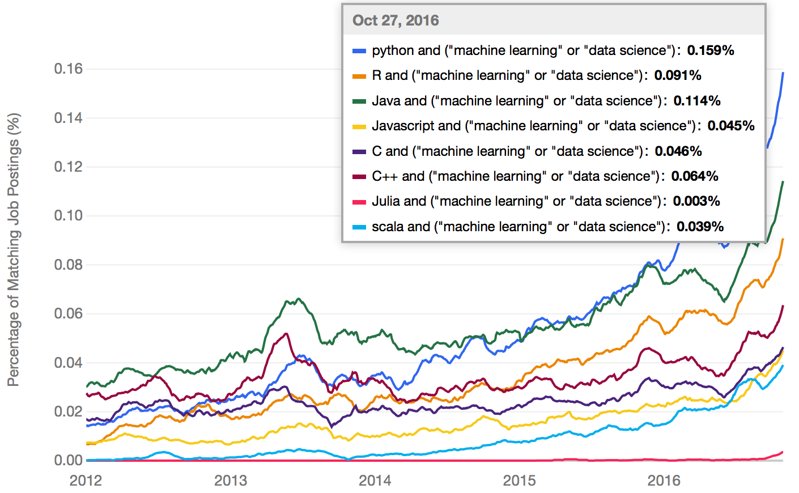

Introduction to Cortex
Kiran Karkera
Created: 2017-12-31 Sun 14:14
Deep learning in Clojure with Cortex
Outline of the talk
- Context: Clojure, Cortex, Machine Learning
- Overview of Cortex
- TLDR versions of using Cortex
- Peeking under the hood.
Context
- machine learning/data science is an overloaded term

Machine Learning Digression
Supervised Machine Learning:
When you are a kid and you see different types of animals, your father tells you that this particular animal is a dog. After doing this a few times, you see a new type of dog that you never saw before - you identify it as a dog and not as a cat or a monkey or a potato.

Applications of Supervised Learning
- One of the early successes for supervised machine learning was reading the zip code in postal mail.
- Dataset called MNIST is a benchmark dataset in machine learning
- Its also the "Hello World" program equivalent in machine learning.

Figure 3: Handwritten digits
- Classifying aspects of human faces such as gender, age, type of expression and skin colour

- Two axes on which we can examine use cases or scenarios
- use case using example of spam filtering. (Classification)
Inference vs prediction
– (e.g Understand the causes of being labeled as spam. Too many links? misspellings? ) – Much more useful in where a human intervention is required to make decisions (e.g. healthcare: predicting re-admission rates) – prediction where we ignore causes)
Research vs production use
– exploration (given a dataset, train a classifier, produce a report) – production (putting a trained model into a production environment)
Why use Clojure for Machine Learning?
- Perception that languages like R/Python are ideal for machine learning.

- Upto 80% of the time, the tasks in machine learning is data extraction and cleaning.
- Not just in time, but code volume is disproportional. Given a dataset, training and prediction a simple classifier is
(defn train-and-evaluate "train and evaluate classification " [spam-dataset] (let [ email (-> (weka-dataset spam-dataset "email") (cmd/dataset-set-class "spam")) classifier (-> (cls/make-classifier :decision-tree :random-forest) (cls/classifier-train email))] (:summary (cls/classifier-evaluate classifier :cross-validation email 10))))
Features of Cortex
- Deep learning library written in Clojure
- support training on CPU and GPUs
- supports feedforward and Convolutional nets
- supports activations types such as logistic/tanh/relu/selu
- has out of box UI / can leverage other UI such as Tensorboard (from Tensorflow)
- data centric interface
How to train a simple network
Data
The room occupancy dataset
- Contains measurements of light, temperature, humidity and CO2 of an office room.
- Goal is to predict where the room is occupied.
- Or: Predict the class (occupied or not) given the observations.

Data ingestion
(def data-vectors (->> "resources/occupancy/datatraining.csv" (slurp) (clojure.string/split-lines) ;; ignore the header row (rest) ;; id, date (map (fn [l] (drop 2 (clojure.string/split l #"," )))) (mapv (fn [m] (mapv #(Double. %) m))))) (take 2 data-vectors)
([23.18 27.272 426.0 721.25 0.00479298817650529 1.0] [23.15 27.2675 429.5 714.0 0.00478344094931065 1.0])
Create training data format
(defn make-feature-vec [data-vectors] (->> data-vectors (mapv (fn[m] {:data (-> m butlast vec) :labels (-> m last vector)})) shuffle)) (->> (make-feature-vec data-vectors) (take 2))
- Each instance is a map with keys for data and labels
({:data [22.15 27.245 0.0 586.5 0.0044959713579516], :labels [0.0]} {:data [20.89 23.445 0.0 450.5 0.00357640828064061], :labels [1.0]})
Split the data into train and test
(def train-test-ds (let [ds (make-feature-vec data-vectors) ds-count (count ds) ;;do a 90-10 split into train/test cutoff (int (* 0.9 ds-count)) train-ds (take cutoff ds) test-ds (drop cutoff ds)] [train-ds test-ds]))
Define the layers
- Network is defined as a vector of layers
- Each layer may have specific arguments
- input layer take 3 arguments, the x y z dimensions of the input cube
;;input layer for an image of size 28 (length) x 28 (breadth) x 3 (depth) (layers/input 28 28 3 :id :data) ;;input layer for room occupancy is 5(inputs) x 1 x 1 (layers/input 5 1 1 :id :data)
- The :id key specifies the key in the input instance map
{:data [22.15 27.245 0.0 586.5 0.0044959713579516], :labels [0.0]}
Layer description for room occupancy
(def description [(layers/input 5 1 1 :id :data) (layers/batch-normalization) (layers/linear 1) (layers/logistic :id :labels)])
Train the network and evaluate the results
- Train it for 10 epochs
- One epoch is an interation where the neural network gets to see each instance in the dataset once
(def res (let [[train-ds test-ds] train-test-ds] (train-n description train-ds test-ds ;;run for 10 training epochs :batch-size 50 :epoch-count 10 )))
| :type | :value | :lambda | :node-id | :argument |
|---|---|---|---|---|
| :mse-loss | 0.03620482071311607 | 1.0 | :labels |
Loss for epoch 8: (current) 0.03620482 (best) 0.03999246 [new best]
| :type | :value | :lambda | :node-id | :argument |
|---|---|---|---|---|
| :mse-loss | 0.0330850071487428 | 1.0 | :labels |
Loss for epoch 9: (current) 0.03308501 (best) 0.03620482 [new best]
| :type | :value | :lambda | :node-id | :argument |
|---|---|---|---|---|
| :mse-loss | 0.03046061750823965 | 1.0 | :labels |
Loss for epoch 10: (current) 0.03046062 (best) 0.03308501 [new best]
Look under the hood
Data oriented design
- Neural networks are graphs <insert graph pic>
- A graph is a vector of layers.
- Each layer is a map
(layers/input 2 1 1 :id :data) ;;when eval'd returns ;;[{:type :input, :output-size 2, :output-width 2, :output-height 1, :output-channels 1, :id :data}]
(def description [(layers/input 2 1 1 :id :data) (layers/batch-normalization) ;;Fix the weights to make the unit test work. (layers/linear 1 :weights [[-0.2 0.2]]) (layers/logistic :id :labels)]) (def g (network/linear-network description)) (-> g :compute-graph keys) ;;returns ;;(:nodes :edges :buffers :streams)
- how does this help?
- Create visual representations of the network (nodes/edges)
(->> g :compute-graph :nodes (mapv (comp :input-dimensions second))) ;;output [[{:channels 1, :height 1, :width 2, :stream :data}] [{:channels 1, :height 1, :width 2, :id :data}] [{:channels 1, :height 1, :width 2, :id :batch-normalization-1}] [{:channels 1, :height 1, :width 1, :id :linear-1}] [{:channels 1, :height 1, :width 1, :id :labels}]]
traversing a network:
- this is a 'moded' operation:
while training:
- backpropogation: forward pass: calculate the output given an input
- backward pass: calculate the gradients (or the correction)
While inference/prediction
- forward pass
Pre-training checks
- check network structure
- number of weights/biases/connections between layers
- number of loss functions and how they are connected
- memory allocation
while-training checks
- find causes for issues like
- no learning or learning too slow.
- test what individual layers are doing. (e.g. show images from mnist/ cat and dog )
Net surgery
- see example in mnist example core.clj
Post-training checks
- compare performance on multiple metrics
Summary
When Cortex is a good fit
- Training feedforward networks for classification and regression
- Observing training progress
When Cortex may not be a good fit
- training sequences (which requires a type of network called RNN)
- a Java based alternative is Deeplearning4j
- training networks with newer network structures (e.g. Inception / Capsule networks).
- networks with new types of units (e.g. ? LST/GRU)
- distributed training (usually needed only after a stable network is determined, and you have a lot of data)
- ingesting certain types of pre-trained networks
- there is support for ingesting certain kinds of networks (e.g. Keras/Caffe), but may not work out of the box.
References
- (labeled for noncommercial use with modification) blind men and elephant image
- data science languages by popularity
{kind=link}